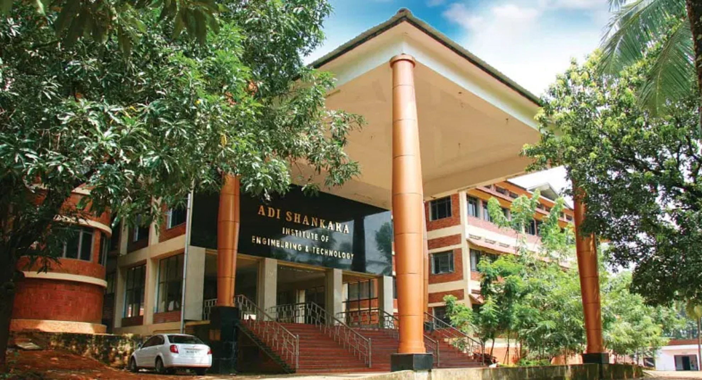

Adi Shankara college

MCA
The ASIET Master of Computer Applications (MCA) program teaches students research and innovation skills. Students are immersed in cutting-edge technology and taught a transdisciplinary, application-oriented approach to tackling real-world challenges. The Department of Computer Application has a diverse group of motivated researchers in emerging fields like Artificial Intelligence (AI), Machine Learning (ML), Deep Learning, Internet of Things (IoT) and smart systems, Image Processing, Augmented Reality/Virtual Reality, Big Data Analytics, Network Security, Mobile Ad Hoc Networks, Distributed Algorithms, Nature-Inspired Algorithms, and Processor & Architecture Study. Three well-equipped research labs—Multimedia, Data Analytics, and Bioinformatics—serve student research needs. These labs let students solve societal issues in real time. The MCA department is built on highly trained teachers who are research and innovation-oriented. They mentor students to take more courses to gain industry-ready skills. Students can practice their practical skills in well-equipped labs.ASIET instructors and facilities strive to offer students the finest placement chances. Research labs also encourage students to pursue further education and participate in R&D.
STUDENTS :
- Aswin
- Ebin
- Denil